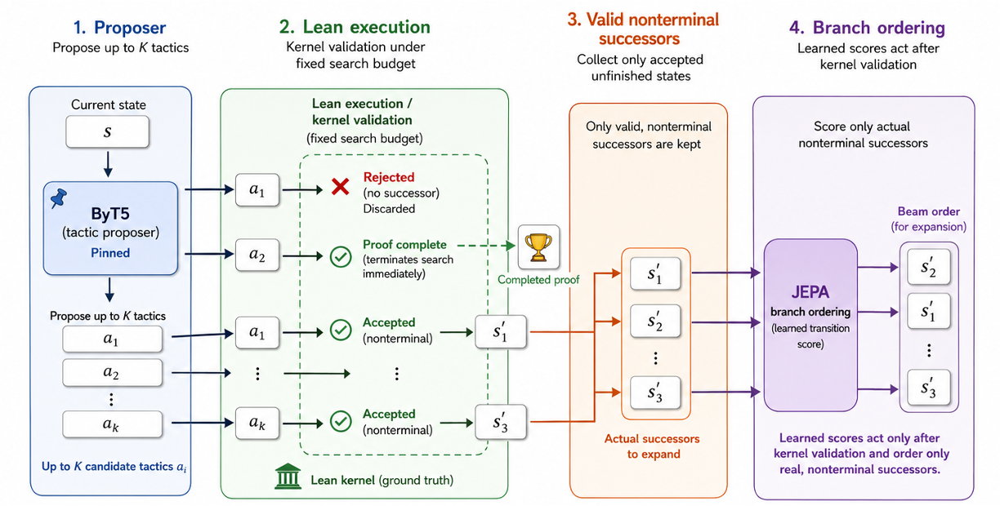

Predicting the Next State Is Not Enough: JEPA Representations for Lean Theorem Proving
Neural Lean provers must both propose tactics and decide which valid successor states to explore. It is unclear whether one-step Lean transitions provide a useful self-supervised signal for ordering search branches.
A JEPA-style model with a context encoder, predictor, and EMA target encoder predicts latent successor representations from recorded (state, tactic, successor) transitions in LeanDojo Benchmark 4. A fixed pretrained ByT5 tactic generator proposes candidates that Lean validates; the JEPA model scores only kernel-validated, nonterminal successors to influence beam-search branch ordering without altering tactic generation. It is compared against a matched InfoNCE objective, untrained weights, a hand-designed progress heuristic, and proposer score under a fixed kernel-check budget.

JEPA achieves higher same-theorem Top-1 ranking (50.18%) than InfoNCE (31.55%), but solves fewer theorems in fixed-budget search (282.3 of 987 across three seeds) than proposer ordering (308) while using more kernel checks. Accurate one-step transition ranking is insufficient as a long-horizon search value; the study yields a controlled negative result.
| Search order | Solved | Checks | Wall (s) |
|---|---|---|---|
| Proposer score | 308/987 | 349.92 | 64.62 |
| Progress | 304/987 | 352.99 | 65.31 |
| Untrained | 303.7/987 | 351.03 | 65.99 |
| InfoNCE | 289.7/987 | 359.89 | 66.02 |
| JEPA | 282.3/987 | 363.45 | 66.61 |